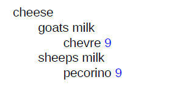
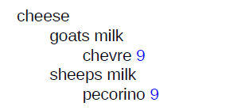

Example: Merging <indexterm> elements
This example contains a multilevel <indexterm>
element.
Given the following <indexterm> elements:
<indexterm>cheese
<indexterm>sheeps milk
<indexterm>pecorino</indexterm>
</indexterm>
</indexterm>
<indexterm>cheese
<indexterm>goats milk
<indexterm>chevre</indexterm>
</indexterm>
</indexterm>A processor treats the <indexterm> elements as equivalent to the
following multilevel <indexterm> element:
<indexterm>cheese
<indexterm>sheeps milk
<indexterm>pecorino</indexterm>
</indexterm>
<indexterm>goats milk
<indexterm>chevre</indexterm>
</indexterm>
</indexterm>A processor generates the following index entries:
- A primary entry for "cheese"
- Secondary entries for "goats milk" and "sheeps milk"
- Tertiary entries for "chevre" and "pecorino" that include page numbers
The rendered index entry might look like the following:

